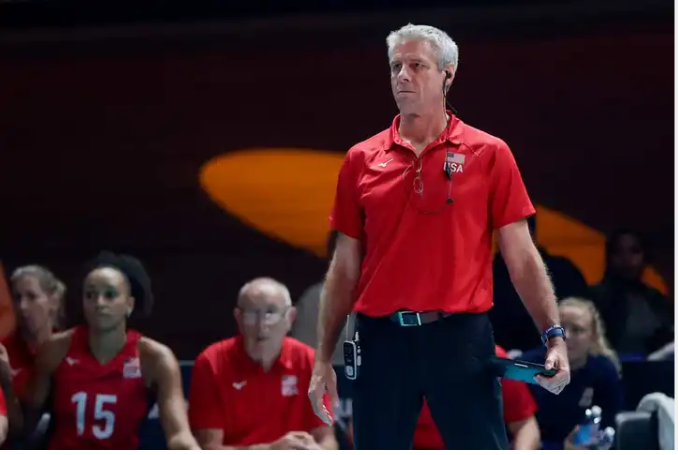

Misty May-Treanor is a retired American player considered one of the best and most successful female beach volleyball players of all time. She has won 112 tournaments and international
competitions. She retired in 2012 and was inducted into the Volleyball Hall of Fame in 2016.
Karch Kiraly

Head coach Karch Kiraly of USA during the match between Italy v USA at the Omnisport in Apeldoorn Netherlands.
Karch Kiraly is an American volleyball player, coach and broadcast announcer. He began playing volleyball at age six. He is the only player to have won Olympic medals of any colour in both the indoor and beach volleyball categories.
Karch Kiraly is currently the head coach of the United States women's national volleyball team.